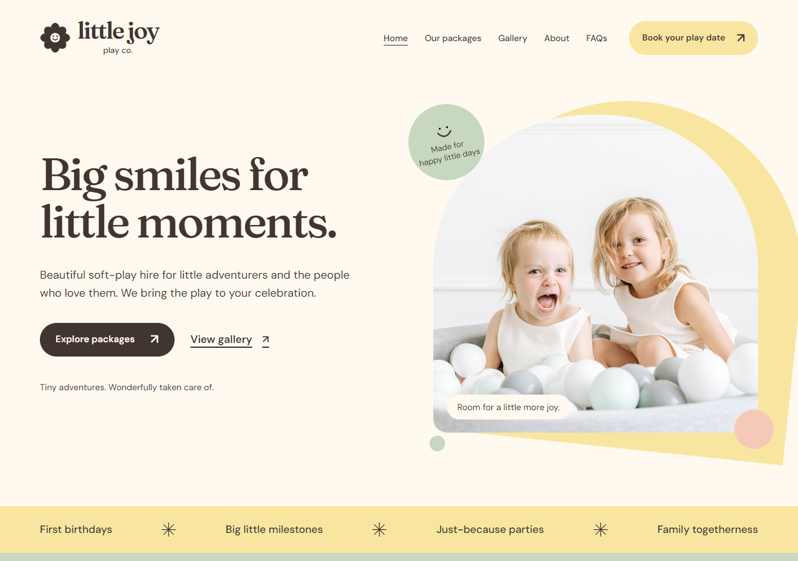
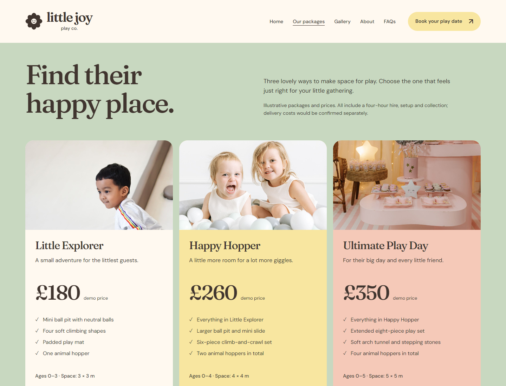
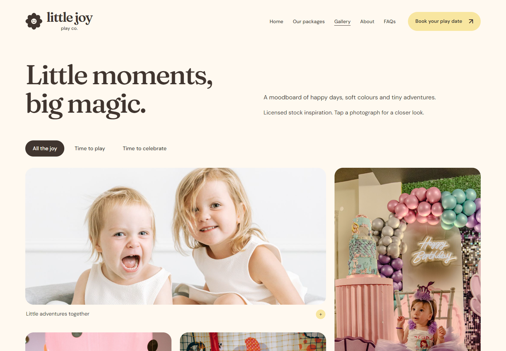
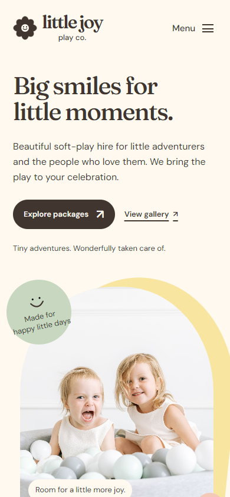
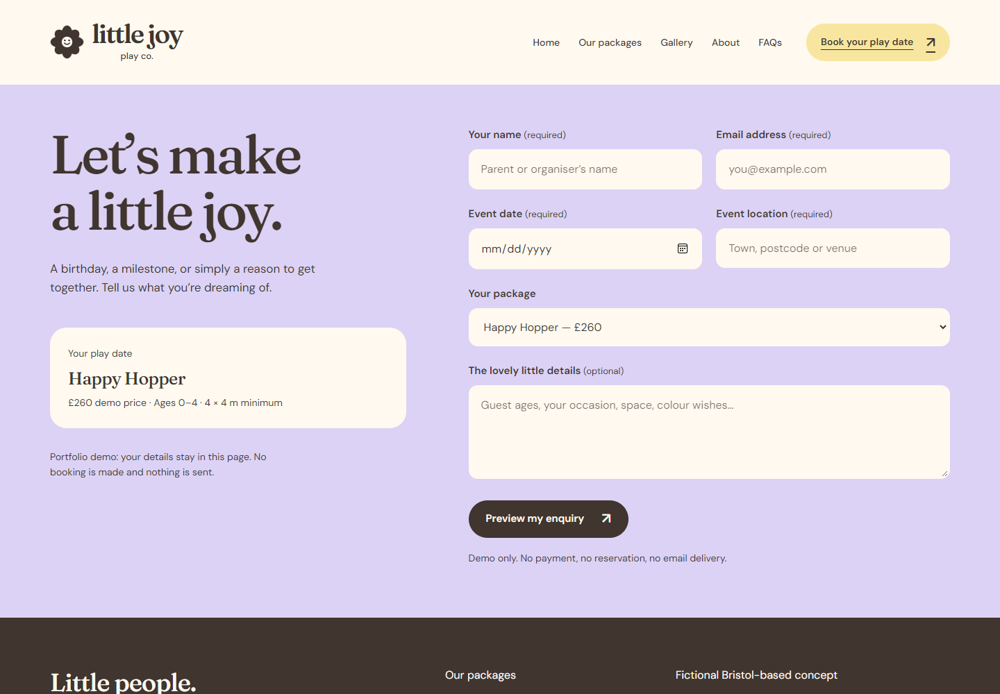

Little Joy
Play Co.
Premium soft-play hire, designed around parents.
I imagined Little Joy as a welcoming place for parents to plan a celebration, with a playful feel and the practical details close at hand.
Explore the websiteA self-initiated concept for a fictional business.

- The project
- Independent concept
- The work
- Web design & development
- The audience
- Parents & event organisers
- The website
- Five focused pages
Small guests.
Clear choices.
I started by thinking about what I’d want to know if I were planning a party: what does the play area look like, what’s included, and will it fit? I made the photographs and package details a big part of the design so parents could start picturing their own celebration.
I borrowed the rounded shapes of soft-play equipment to frame the photographs, then brought in cream, butter yellow, peach and sage. I wanted it to feel cheerful and gentle, with a little character in the lettering.

Room to breathe.
Initially, I designed Little Joy as one long page, with the packages, photographs and booking details all together. As I spent more time with it, I felt there was too much to take in at once.
I kept the homepage as a short introduction and gave the other parts their own pages. I wanted parents to get a feel for Little Joy first, then explore the packages, browse for inspiration or find an answer at their own pace.


Useful little details.
I wanted getting in touch to feel as easy as choosing a package. Once parents have found one they like, it’s already there when they open the enquiry form, along with the price and the space it needs. There’s no need to go back and look it all up again.
I also thought about the smaller moments: being able to take a closer look at a photograph, find a quick answer or add a few wishes for the day. Those details were my way of making the practical side feel a little more personal.

Take a little look.
Have a look around Little Joy and see how it all comes together.
I created Little Joy as an independent concept for a fictional business, using stock photography to help tell the story. You’ll find the photography credits in the demo.